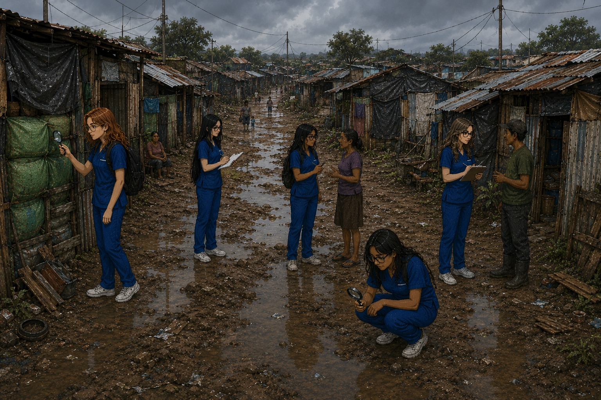

🚨 ALERTA SANITARIA
Investiga cada expediente, identifica el determinante social y comprende cómo afecta la salud.
📁 SELECCIONA UN EXPEDIENTE
Puedes revisar cualquier archivo las veces que necesites.
EXPEDIENTES RESUELTOS: 0/5
Completa la actividad para resolver el expediente.
🧩 CASO RESUELTO
Has identificado los cinco determinantes sociales presentes en Calle Larga.

🏛️ Políticas públicas · 💰 Posición socioeconómica
🧠 Factores psicosociales · 🏠 Circunstancias materiales · 📚 Educación